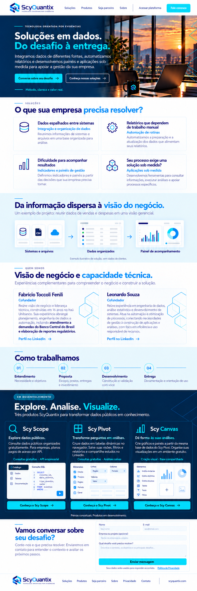
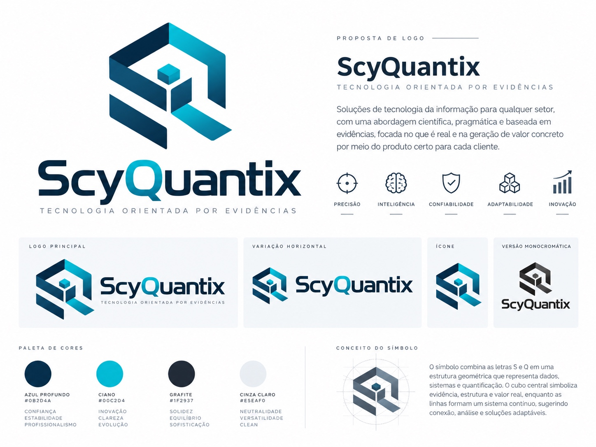
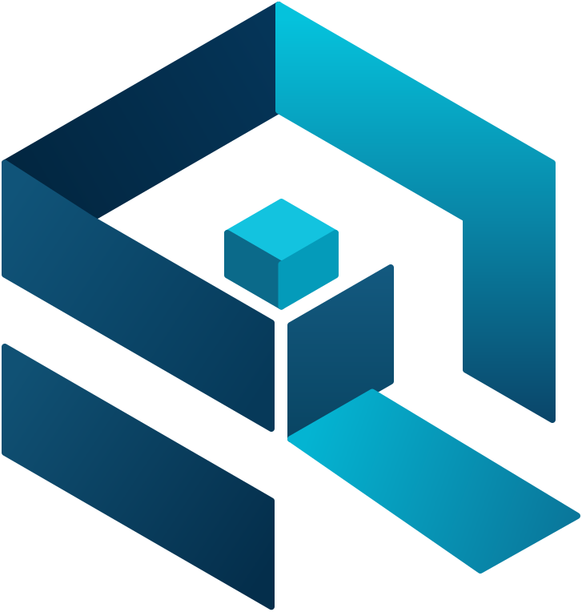

Arte final

Referências e conteúdo separados. Este catálogo não representa o layout final. A arte ainda contém controles que devem ser removidos.


Conferir fidelidade à prancha antes de aprovação.

{
"name": "ScyQuantix",
"tagline": "Tecnologia orientada por evidências.",
"domain": "scyquantix.com",
"nav": [
{
"label": "Soluções",
"target": "solucoes"
},
{
"label": "Produtos",
"target": "produtos"
},
{
"label": "Sobre",
"target": "fundadores"
}
]
}{
"eyebrow": "Tecnologia orientada por evidências",
"title": [
"Soluções em dados.",
"Do desafio à entrega."
],
"description": "Integramos dados de diferentes fontes, automatizamos relatórios e desenvolvemos painéis e aplicações sob medida para apoiar a gestão da sua empresa.",
"signature": "Método, clareza e valor real."
}{
"eyebrow": "Soluções",
"title": "O que sua empresa precisa resolver?",
"items": [
{
"problem": "Dados espalhados entre sistemas",
"title": "Integração e organização de dados",
"description": "Reunimos informações de sistemas e arquivos em uma base organizada para análise.",
"icon": "database"
},
{
"problem": "Relatórios que dependem de trabalho manual",
"title": "Automação de rotinas",
"description": "Automatizamos a preparação e a atualização dos dados que alimentam seus relatórios.",
"icon": "cog"
},
{
"problem": "Dificuldade para acompanhar resultados",
"title": "Indicadores e painéis de gestão",
"description": "Definimos indicadores e painéis a partir das decisões que sua empresa precisa tomar.",
"icon": "chart-column-increasing"
},
{
"problem": "Seu processo exige uma solução sob medida?",
"title": "Aplicações sob medida",
"description": "Desenvolvemos ferramentas para consultar informações, executar análises e apoiar processos específicos.",
"icon": "boxes"
}
]
}{
"title": "Da informação dispersa à visão do negócio.",
"description": "Um exemplo de projeto: reunir dados de vendas e despesas em uma visão gerencial.",
"steps": [
"Sistemas e arquivos",
"Dados organizados",
"Painel de acompanhamento"
],
"caption": "Exemplo ilustrativo de solução, sem dados de clientes."
}{
"eyebrow": "Quem somos",
"title": "Visão de negócio e capacidade técnica.",
"description": "Experiências complementares para compreender o negócio e construir a solução.",
"items": [
{
"name": "Fabrício Toccoli Fenili",
"role": "Cofundador",
"description": "Reúne visão de negócio e liderança técnica, construídas em 16 anos no Itaú Unibanco. Sua experiência abrange planejamento, engenharia de dados e automação, incluindo atendimento a demandas do Banco Central do Brasil e elaboração de reportes regulatórios.",
"emphasis": "atendimento a demandas do Banco Central do Brasil e elaboração de reportes regulatórios"
},
{
"name": "Leonardo Souza",
"role": "Cofundador",
"description": "Reúne experiência em engenharia de dados, análise estatística e desenvolvimento de sistemas. Atua na automação e otimização de processos, conectando necessidades de gestão à construção de aplicações e análises, com foco em eficiência e uso responsável de recursos."
}
]
}{
"title": "Como trabalhamos",
"items": [
{
"number": "01",
"title": "Entendimento",
"description": "Necessidade e objetivos"
},
{
"number": "02",
"title": "Proposta",
"description": "Escopo, prazos, entregas e investimento"
},
{
"number": "03",
"title": "Desenvolvimento",
"description": "Construção e validação com você"
},
{
"number": "04",
"title": "Entrega",
"description": "Documentação e orientação de uso"
}
]
}{
"status": "Em desenvolvimento",
"title": "Explore. Analise. Visualize.",
"description": "Três produtos ScyQuantix para transformar dados públicos em conhecimento.",
"items": [
{
"name": "Scy Scope",
"title": "Explore dados públicos.",
"description": "Consulte dados públicos organizados gratuitamente. Para empresas, planos pagos de acesso por API.",
"caption": "Consultas gratuitas · API empresarial",
"preview": "Catálogo e consulta SQL"
},
{
"name": "Scy Pivot",
"title": "Transforme perguntas em análises.",
"description": "Cruze dados em tabelas dinâmicas no navegador. Salve suas visões, filtros e relatórios e compartilhe estudos no LinkedIn.",
"caption": "Consultas gratuitas · Análises salvas",
"preview": "Dimensões, linhas, colunas e valores"
},
{
"name": "Scy Canvas",
"title": "Dê forma às suas análises.",
"description": "Crie gráficos e painéis a partir da mesma base de dados do Scy Pivot. Organize suas visualizações em um ambiente gratuito.",
"caption": "Criação visual · Base compartilhada",
"preview": "Composição de gráficos e painéis"
}
],
"caption": "Prévias conceituais. Produtos em desenvolvimento."
}{
"title": "Nascemos para gerar valor para pessoas, negócios e sociedade, através do uso responsável da tecnologia.",
"description": "Scy Scope, Scy Pivot e Scy Canvas estão em desenvolvimento."
}{
"tagline": "Tecnologia orientada por evidências.",
"domain": "scyquantix.com",
"copyright": "© 2026 ScyQuantix."
}